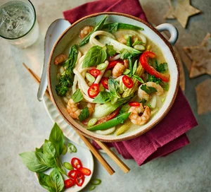

Thai Curry Noodle Soup

Description
This delicious Thai meal will be a joy to share on a warm family dinner.
During the winter as well as the summer, this prep is a four-season speedy but spicy dish.
You can use whatever vegetable you have in your fridge, be creative!
This recipe is ideal for busy days.
Ingredients
- 1 tsp vegetable oil
- 220g stir-fry vegetable mix
- 150g raw prawns, shelled
- 180ml light coconut milk
- 220ml vegetable stock, made with 1 low-salt stock cube
- 250g straight-to-wok udon noodles
- 5g coriander, roughly chopped
- 5g Thai basil, roughly torn
- 1 red chilli, sliced, to serve (optional)
- 1 spring onion, sliced, to serve
Steps
- Heat the oil in a saucepan over a medium heat and cook the curry paste for 1 min before adding the stir-fry veg and prawns. Cook for 3 mins until the prawns are mostly pink, then add the coconut milk, veg stock and noodles.
- Bring to the boil, then reduce the heat to a simmer and cook for 5 mins until the noodles are cooked through and the veg is tender but still has a bite. Divide between two bowls and sprinkle over the herbs, chilli and spring onion.